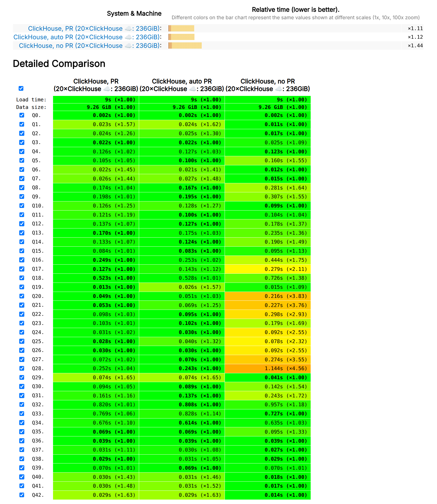

A function for message authentication using a (shared) secret key:
:) SELECT HMAC('SHA256', 'ClickHouse is good', key)
HMAC is used in many APIs, especially web hooks.
Now you can use ClickHouse server as a web hook and validate
the message authenticity on INSERT:
INSERT INTO logs SELECT raw_blob::JSON FROM input()
WHERE getClientHTTPHeader('X-Hub-Signature-256')
= 'sha256=' || hex(HMAC('SHA256', raw_blob, 'key'))
FORMAT RawBLOB;
Developer: Mikhail f. Shiryaev.
A New Function For Dictionaries 🍭
ClickHouse has a unique feature, dictionaries — tables for fast key-value lookups using specialized data structures
(from hash tables to IP ranges, regexp trees, and reverse geocoding),
and custom data sources (regular tables or external databases,
like Redis, Cassandra, MySQL, PostgreSQL...).
A new function in 25.12, dictGetKeys does a reverse lookup from a value to a set of keys.
:) SELECT dictGetKeys('taxi_zone_dictionary', 'Borough', 'Brooklyn');
[2] -- there is only one Brooklyn, and it has id 2 in the dictionary
Automatically creates a per-query cache, so that bulk lookups will be fast.
Developer: Nihal Z. Miaji
Non-constant IN 🍫
-- constant list: works
:) SELECT count() FROM hits WHERE SearchPhrase IN ('смотреть', 'купить');
-- table: works
:) SELECT count() FROM hits WHERE SearchPhrase IN phrases;
-- subquery: works
:) SELECT count() FROM hits WHERE SearchPhrase IN (SELECT phrase FROM phrases);
-- non-constant list, before 25.12:
:) SELECT count() FROM hits WHERE SearchPhrase IN (
'смотреть', 'купить', topLevelDomain(URL) = 'com' ? 'sell' : 'buy')
Code: 1. DB::Exception: Function 'in' is supported only if second argument is constant or a table expression. (UNSUPPORTED_METHOD)
Now when an ALIAS column is a trivial expression, you can use it in INSERTs:
INSERT INTO logs (URL, Referrer) VALUES
('https://clickhouse.com/', 'https://www.google.com/');
Developer: Shaurya Mohan.
Settings For Projections 🧁
You can use projections to have different sort orders of a table
or maintain preaggregated data to accelerate queries:
CREATE TABLE pageviews (
CounterID UInt32,
UserID UInt64,
EventTime DateTime,
...
PROJECTION by_counters (
SELECT CounterID, count(), uniq(UserID)
GROUP BY CounterID-- aggregating projection)(WITH SETTINGS index_granularity = 128)
) ORDER BY (CounterID, UserID, EventTime)
New in 25.12: an option to specify custom SETTINGS for projections.
— works in CREATE and ALTER statements.
Developer: Amos Bird.
Index Behavior On ALTER 🍩
Before 25.12 you could not ALTER a column used in secondary indices:
:) CREATE TABLE test (s String, x UInt64, INDEX idx (x) TYPE minmax) ORDER BY s;
:) ALTER TABLE test MODIFY COLUMN x Nullable(UInt64);
Exception: Trying to ALTER `x` column which is a part of the index `idx`.
In 25.12, it works!
Controlled by a new setting, alter_column_secondary_index_mode =
'throw' | 'drop' | 'rebuild' | 'compatibility'
Developer: Raúl Marín.
S3Queue: Tag and Move Actions 🎈
The S3Queue table engine allows continuous consumption of files from S3.
Also has a sister, AzureQueue.
after_processing actions:
— keep — delete — move (25.12): move a file to a different path or bucket
— tag (25.12): attach a tag to a file (after_processing_tag_key/_value)
Developer: Murat Khairulin.
A New Format, Buffers 🪅
A new format, Buffers, designed for interop with WebAssembly.
Similar to Native and Arrow, but witout headers.
Usable for in-memory data exchange when the types and serialization formats are pre-negotiated.
$ ch -q "SELECT number, toString(number) FROM numbers(5) FORMAT Buffers" | xxd -c8
00000000: 0200 0000 0000 0000 ........ - number of columns
00000008: 0500 0000 0000 0000 ........ - number of rows
00000010: 2800 0000 0000 0000 (....... - buffer size of the column 1 (40 bytes)
00000018: 0000 0000 0000 0000 ........ - elements of the column 1
00000020: 0100 0000 0000 0000 ........
00000028: 0200 0000 0000 0000 ........
00000030: 0300 0000 0000 0000 ........
00000038: 0400 0000 0000 0000 ........
00000040: 0a00 0000 0000 0000 ........ - buffer size of the column 2 (10 bytes)
00000048: 0130 0131 0132 0133 .0.1.2.3 - elements of the column 2
00000050: 0134 .4
Developer: Nihal Z. Miaji.
Performance Improvements
Automatic Parallel Replicas 🛷
25.12 introduces automatic_parallel_replicas_mode,
which collects statistics in the runtime and decides when
— a query is heavy enough and has to be run distributed;
— a query is quick or has a lot of network transfer;

Developer: Nikita Taranov.
Data Skipping During Sorting 🍾
Let's suppose we have the following query:
SELECT * FROM table ORDER BY something LIMIT 100
It reads the data in a streaming way and maintans top 100 in memory,
we already have many more optimizations for it: lazy reading, read in order...
New in 25.12: it also uses the lower boundary value of the accumulated top
for filtering during reading of subsequent granules, and quickly skipping them.
SET use_skip_indexes_for_top_k = 1,
use_top_k_dynamic_filtering = 1;
Demo.
Developer: Shankar Iyer.
Faster "Lazy Reading" 🧦
Starting from 25.12 even queries with a large LIMIT
will benefit from lazy reading.
Demo
Developer: Nikolai Kochetov.
Better Application Of Skip Indices 🥧
Can indices use complex conditions with a mix of AND/OR?
SELECT id FROM tab WHERE
(v1 BETWEEN 10 AND 20 AND v2 BETWEEN 10 AND 20)
OR (v1 BETWEEN 100 AND 2000 AND v2 BETWEEN 100 AND 2000)
OR (v1 > 9000 AND v2 > 9000)
Before 25.12: only primary key can use complex conditions.
Since 25.12: all types of skip indices can use complex conditions.
25.12 also sped up the analysis of huge minmax indices!
Developer: Shankar Iyer.
In-Place Filtering 🍪
A low-level optimization by avoiding memory allocation for columns and improving cache locality when the original column is not referenced after filtering (WHERE/PREWHERE).
Demo
Developer: Xiaozhe Yu.
Faster JOINs 🎀
SELECT a FROM (SELECT a, b FROM table1) AS t1
INNER JOIN (SELECT a, b FROM table2) AS t2 ON t1.a = t2.a
WHERE t1.b != 'wtf' AND t2.b != 'xyz'
Both conditions are pushed down as filters into subqueries...
But since 25.12, the column t2.b is eagerly removed from the blocks before joining.
Demo
Developer: Nikolai Kochetov.
Something Interesting
Text Index 🎁
CREATE TABLE text_log
(
message String,
...
INDEX inv_idx(message)
TYPE text(
tokenizer = 'splitByNonAlpha',
preprocessor = lowerUTF8(normalizeUTF8NFKC(message)))
GRANULARITY 64
) ORDER BY id;
SELECT ... WHERE hasToken(message, 'DDLWorker');
SELECT ... WHERE hasAllTokens(message, ['peak', 'memory']);
SELECT ... WHERE hasAnyTokens(message, tokens('01442_merge_detach_attach'));
Developers: Anton Popov, Elmi Ahmadov, Jimmy Aguilar Mena.
Text Index v3 🎁
A new storage format, optimized for object storage.
Demo
Developers: Anton Popov.
Text Index Is Beta 🎁
SET enable_full_text_index;
Before 25.12 the text index was experimental, and there were no compatibility guarantees.
The current v3 format will be backward-compatible with the path to GA in the next two releases.
Developers: Anton Popov.
Profiling And Tracing With X-Ray 🎇
Now you can instrument, trace, and profile almost any function in the ClickHouse codebase,
and it works with unmodified, production build.
SYSTEM INSTRUMENT ADD `FunctionFactory::tryGet` LOG ENTRY 'Hi!';
SYSTEM INSTRUMENT ADD `QueryMetricLog::startQuery` SLEEP EXIT 0.5;
SYSTEM INSTRUMENT ADD `QueryMetricLog::startQuery` PROFILE;
This is an advanced feature for ClickHouse engineers.
But if you are curious, welcome to FOSDEM 2026, LLVM dev room, Jan 31th.
Developer: Pablo Marcos, Alina Badakhova.
A New JOIN Reordering 🕛
SET query_plan_optimize_join_order_algorithm = 'dpsize,greedy';
A new, DPSize algorithm allows more exhaustive search
for the optimal JOIN order.
The same algorithm is used in Postgres.
Developer: Alexander Gololobov.
Data Lakes
ORDER BY in Iceberg Tables ❄️
CREATE TABLE hits (
CounterID UInt32,
EventTime DateTime,
...
) ENGINE = IcebergS3(...)
ORDER BY (CounterID, EventTime DESC)
Data parts are sorted on INSERT, and SELECTs use the order for optimal reads.
Much like MergeTree!
ClickHouse and Spark are the only engines that utilize part-level sorting in Iceberg.
Developers: Konstantin Vedernikov.
Change Data Feed For Delta Lake 🥂
— a feature that lets you automatically capture and query row-level data changes, such as inserts, updates, and deletes between versions of a DeltaLake.
— 🇮🇱 Tel Aviv, Dec 29 — 🇺🇸 Iceberg Meetup, Menlo Park, CA, Jan 21 — 🇫🇷 Data & AI Paris, Jan 22 — 🇺🇸 Iceberg Meetup, New York, Jan 23 — 🇫🇷 Paris, Jan 28 — 🇧🇪 Iceberg Meetup, Brussels, Jan 30 — 🇧🇪 FOSDEM 2026, Brussels, Jan 31..Feb 1
— How the 5 major cloud data warehouses really bill you
— How the 5 major cloud data warehouses compare on cost-performance
— Introducing pg_clickhouse
— Introducing clickhouse.build
— How to use Rust in ClickHouse: avoiding a full rewrite
— Parallelizing ClickHouse aggregation
— Observability at Canva with ClickHouse
— AI agents hackathon